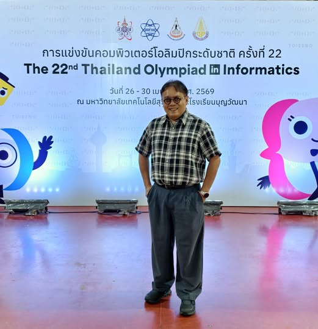

การสนับสนุน talent ไม่ได้สร้างแค่เหรียญ แต่สร้างเครือข่ายและคำถามที่ดี
{kind=link}

การพัฒนา talent เป็นเรื่องจำเป็น แต่คำถามที่ตามมาเสมอคือ เราทุ่มทรัพยากรให้คนไม่กี่คนคุ้มค่าหรือไม่ และคนที่เคยได้เหรียญระดับโลกหายไปอยู่ที่ไหนกันแล้ว คำถามนี้สำคัญ แต่ถ้าถามเพียงด้านเดียว อาจทำให้มองไม่เห็นคุณค่าที่เกิดขึ้นทั้งระบบ
อีกคำถามที่ควรถามควบคู่กันคือ หากประเทศไม่มีการสนับสนุน talent เลย เราจะเสียอะไรไปบ้าง เราอาจไม่รู้ว่าศักยภาพของคนไทยเมื่อเทียบกับโลกอยู่ตรงไหน ไม่รู้ว่ามีขุมกำลังมากน้อยแค่ไหน และไม่เกิดเครือข่ายที่ทำให้คน องค์กร โรงเรียน มหาวิทยาลัย และหน่วยงานต่าง ๆ ได้มาพบและทำงานร่วมกัน
TOI22 เป็นเวทีระดับประเทศที่คัดเลือกนักเรียนกลุ่มสุดท้ายเพื่อเตรียมตัวสู่การแข่งขัน International Olympiad in Informatics ที่ประเทศอุซเบกิซสถานในเดือนสิงหาคม ปีนี้ยังมีความท้าทายใหม่ เพราะเป็นปีแรกที่เด็กที่มาแข่ง TOI อาจต้องไป IOI ในปีเดียวกัน จากเดิมที่มีเวลาฝึกข้ามปี
ข้อจำกัดด้านทรัพยากรทำให้เวลาฝึกสั้นลง และกลายเป็นโจทย์ใหม่ของทั้งมูลนิธิ สอวน. ซึ่งดูแล TOI และ สสวท. ซึ่งดูแลการส่งแข่งขัน IOI นี่สะท้อนว่าการพัฒนา talent ไม่ใช่เรื่องจัดงานแข่งเท่านั้น แต่เป็นการบริหารระบบการฝึก คน เวลา และความรับผิดชอบของหลายหน่วยงานพร้อมกัน
สิ่งที่ได้ไม่ใช่แค่เหรียญ แต่คือเครือข่ายและระบบนิเวศ
ประเทศไทยส่งผู้แทนไปแข่ง IOI ตั้งแต่ปี 1991 ถึงวันนี้เป็นเวลากว่า 35 ปี มีผู้แทนเป็นร้อยคน รุ่นแรก ๆ ตอนนี้อยู่ในวัยที่กำลังมีบทบาทสำคัญในประเทศ สิ่งที่ได้จึงไม่ใช่เพียงเหรียญหรือชื่อเสียงเฉพาะช่วงเวลา แต่คือเครือข่ายบุคคลที่สะสมและกลับมาช่วยระบบต่อ
ในระดับองค์กร ระบบนี้เชื่อม สพฐ. สอวน. สสวท. มหาวิทยาลัย และโรงเรียนทั่วประเทศเข้าด้วยกัน ในระดับบุคคล กรรมการโอลิมปิกจำนวนมากเป็นอดีตผู้แทน ครูที่ติวเด็กจำนวนมากก็เป็นศิษย์เก่าศูนย์ สิ่งเหล่านี้คือทุนทางสังคมและวิชาการที่เกิดจากเวทีพัฒนา talent อย่างต่อเนื่อง
ตัวท็อปเป็นตัวชูโรง แต่เป้าหมายจริงคือ mass ของคนที่ได้รับการพัฒนา
ในภาพใหญ่ สอวน. มีประมาณ 20 ค่าย ค่ายละราว 40 คน นี่คือฐานกำลังที่ป้อนเข้าสู่มหาวิทยาลัยอย่างมีคุณภาพ การสร้าง talent จึงไม่ได้มีไว้เพื่อคนไม่กี่คน ตัวท็อปเป็นเพียงตัวชูโรง แต่เป้าหมายจริงคือจำนวนคนโดยรวมที่ได้รับการพัฒนา ทั้งครู นักเรียน สื่อการสอน และวัฒนธรรมการแก้ปัญหา
เทคโนโลยีช่วยให้การขยายผลทำได้มากขึ้น TOI มีโจทย์ออนไลน์ผ่าน TOI-Zero มีคลิปให้เรียนเอง ทำให้ต้นทุนต่อคนต่ำลงและเด็กเก่งขึ้น แต่การให้ความรู้เพียงอย่างเดียวไม่พอ ระบบต้องให้เด็กคิด ให้ทำ ให้แก้ปัญหา และให้ตั้งคำถามด้วย
ในยุค AI คำตอบมีอยู่ทั่วไป แต่คำถามที่ดียังเป็นของหายาก
งานพัฒนาคนยังเป็นเรื่องเดิมที่ต้องทำอย่างมุ่งมั่น แต่ต้องปรับวิธีคิดและหาวิธีการใหม่เพื่อให้ได้ผลที่ดีกว่าเดิม โดยเฉพาะในยุค AI ที่คำตอบจำนวนมากอยู่ในมือเราแทบตลอดเวลา
สิ่งที่ขาดจึงไม่ใช่เพียงข้อมูลหรือคำตอบ แต่คือคำถามที่ดี คำถามที่ทำให้คนคิดไกลขึ้น แก้ปัญหาลึกขึ้น และเห็นความเชื่อมโยงของระบบมากขึ้น การพัฒนา talent จึงไม่ใช่แค่ฝึกให้ตอบโจทย์ได้ แต่ต้องฝึกให้ตั้งโจทย์ที่พาประเทศไปข้างหน้าได้ด้วย